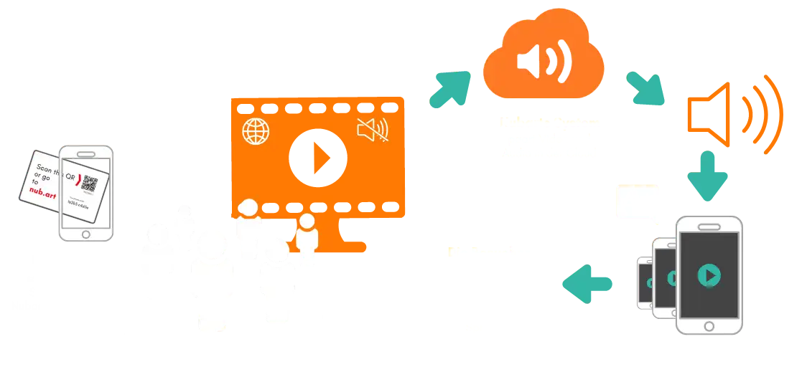

Internetbasierte Audio-Video-Synchronisierung in Echtzeit

Jemand sieht ein Video ohne Ton in einem Schaufenster, Museum oder an einem anderen öffentlichen Ort.
Diese Person scannt mit ihrem Smartphone einen QR-Code und hört sofort den perfekt synchronisierten Ton in der Sprache ihrer Wahl.
Das ist Nubart SYNC: ein webbasierter Dienst, der stummen Videobildschirmen mehrsprachigen Ton hinzufügt. Der Ton wird synchron zum Bild direkt auf die Smartphones der Zuschauer übertragen – ohne App, ohne Kopfhörer und ohne spezielle Hardware.
Die Synchronisierung erfolgt ohne merkliche Latenz und bleibt auch bei langen Videos oder Endlosschleifen zuverlässig erhalten.
Unsere patentierte Technologie benötigt keine spezielle Ausrüstung und keine komplexen technischen Systeme wie WLAN-Broadcast, Beacons, angepasste Router, Hochfrequenz- oder Infrarottechnik. Alles, was Sie und Ihr Publikum benötigen, ist eine normale Internetverbindung (WLAN oder mobile Daten).
Nubart SYNC ist vollständig skalierbar: Weder die Länge des Videos noch die Anzahl der Zuschauer spielen eine Rolle. Auch Videos in Endlosschleife werden zuverlässig unterstützt. Ideal für jede Art öffentlicher Präsentation – von Videowänden über Projektionen bis hin zu Lasershows.
Demo zum Testen von Nubart SYNC
Das ist unsere Demo
Spielen Sie das Video hier ab
In unserer Demo streamen wir das Video. In einem echten Anwendungsfall könnte das Video jedoch lokal abgespielt werden.

Scannen Sie diesen QR-Code mit Ihrem Handy

Wählen Sie eine Sprache aus

Spielen Sie die Tonspur ab
Demo zum Testen von Nubart SYNC
Öffnen Sie diese Seite auf einem PC, um unsere Demo zu testen
Um unsere Demo auszuprobieren, benötigen Sie zwei Geräte: eines, um das Video zu öffnen, und ein weiteres, um die synchronisierte Tonspur abzuspielen. Da Sie unsere Website auf einem Smartphone ansehen, können Sie sie wahrscheinlich nicht sofort ausprobieren. Bitte öffnen Sie die Seite auf einem größeren Gerät, um alle Funktionen der Demo nutzen zu können.
Videoaufnahmen in verschiedenen Sprachen im öffentlichen Raum
Warum Nubart SYNC?
Mir Nubart SYNC haben auch stummgeschaltete Video-Displays einen Ton.
Der öffentliche Raum ist voll von stummen Videos: Videowerbung auf Plakatwänden und in Schaufenstern, Sicherheitsinformationen in Flughäfen, Aufklärungsfilmen in Wartezimmern... Aber sowohl die Sicherheits- als auch die Koexistenzregeln verlangen, dass diese Videos stummgeschaltet werden.
Diese Videos könnten in ihrer Aussage wesentlich verstärkt werden, wenn die Zuschauer den Ton einfach per Streaming auf ihr Handy hören könnten.
Bislang konnte dieses Ziel nur mit komplexen Hardwaresystemen erreicht werden.
Mit Nubart SYNC können Videos im öffentlichen Raum mit Ton unterlegt werden, ohne Passanten oder Unbeteiligte zu stören. Platzieren Sie einfach unseren QR-Code neben dem Bildschirm oder integrieren Sie ihn in das Video selbst.
Sie können es jetzt mit unserer Demo sofort selbst ausprobieren: eine E-mail zu hinterlegen ist dazu nicht nötig!

Was gibt es auf dem Markt, um Audio und Video zu verbinden?
Was Nubart SYNC besser macht als geläufige Lösungen
Aktuelle Lösungen
Heute ist immer noch wartungsintensive Hardware erforderlich, um Audio und Video synchron zu verbinden: spezielle Videoplayer, RF-, RFID- und IR-Aktivierungssysteme, i-Beacons usw.
Einige Unternehmen bieten Internet-Broadcasting an, aber nur in Verbindung mit einem firmeneigenen Portal, manchmal in Kombination mit einer nativen App.
Was Nubart SYNC besser macht
Der Wert von Nubart SYNC liegt in seiner revolutionären Einfachheit.
Zum ersten Mal kann eine mehrsprachige, perfekt lippensynchrone Audioquelle für öffentliche Videos spontan und einfach über einen QR-Code an jeden Zuschauer gestreamt werden.
Die synchronisierte Tonspur wird einfach im Browser des Endnutzers geöffnet.
Was bedeutet das?
Nubart SYNC eröffnet neue Möglichkeiten für mehrsprachige und barrierefreie Videoinhalte im öffentlichen Raum – ohne spezielle Empfangstechnik oder Apps.
Die zugrunde liegende Technologie ist in den wichtigsten internationalen Märkten patentrechtlich geschützt.
Statistiken für Ihre öffentlichen Videos
Erhalten Sie einen Überblick darüber, wer Ihre Videos wirklich sieht

Sammeln Sie mühelos Besucherdaten, ohne die Privatsphäre zu verletzen.
Finden Sie mit Nubart SYNC heraus, wer Ihre Lehr- und Werbevideos im öffentlichen Raum anschaut. Im Gegensatz zu herkömmlichen Methoden wie Kameras oder Infrarot bietet Nubart SYNC einen genauen Einblick in das Engagement der Zuschauer und das Nutzerverhalten. Nubart SYNC liefert wertvolle Daten für strategische Entscheidungen.
Nubart SYNC sammelt aggregierte Nutzungs- und Verhaltensdaten von den Smartphones der Nutzer - anonym, ohne Cookies von Dritten und ohne Verletzung der Privatsphäre.
Sie haben Zugang zu einem Kunden-Dashboard, das Ihnen wichtige Informationen liefert, darunter:
- Heimatland des Nutzers
- Muttersprache des Nutzers
- Nutzer pro Tag
- Nutzer nach Tageszeit
Sie können sogar ein Feedback-Formular hinzufügen, um spezifische Fragen zu stellen.
Sehen Sie das Statistik-Dashboard von Nubart SYNC in AktionAnwendungsfälle, die mit Nubart SYNC kompatibel sind
Nubart SYNC ist geeignet für

Museen
- Videos zur Wissensvermittlung
- Video-Installationen
(Am besten in Kombination mit den Audioguide-PWAs von Nubart)

Anzeige
- Werbetafeln
- Digitales Außer-Haus-Verhalten (DOOH)
- Ausstellungsräume
- Baumärkte

Barrierefreiheit
- Bereitstellung von Audiodeskriptionen
- Leichte Sprache
- Hörgeschädigte

Messen und Ausstellungen
Video-Erklärer für komplexe Produkte.

Kino
- Gleichzeitiges mehrsprachiges Streaming
- Straßenfeste
- Unter freiem Himmel

Warteräume
- Einwanderung
- Krankenhaus
- Behörden

Flughäfen
- Sicherheitshinweise
- Unterhaltung in Wartebereichen

Projektionskartierung auf Gebäude
Das Publikum kann sich synchronisierte Musik oder eine Erklärung direkt auf seinem Smartphone anhören.

Und viele andere
Sicherlich gibt es Anwendungen für Nubart SYNC, an die wir noch nicht gedacht haben. Lassen Sie es uns wissen!
Nubart SYNC - Funktionsübersicht
So funktioniert Nubart SYNC

Video-Wiedergabesysteme, die mit Nubart SYNC kompatibel sind
Kompatible Video-Player-Optionen:
Jeder Bildschirm oder Player mit Internetanschluss
Wenn Ihr Gerät einen modernen Browser öffnen kann und über eine Internetverbindung verfügt, sollte es mit Nubart SYNC kompatibel sein.
Brightsign
Kompatibel mit internetfähigen Brightsign Videoplayern wie HD224. Kompatibel mit der Digital Signage Software Brightsight Author.
Micromapping oder andere AV-Lösungen
Solange Ihr Gerät über eine Internetverbindung verfügt, können Sie unsere API in Ihr eigenes Wiedergabesystem integrieren. Bitte kontaktieren Sie uns.
Audio-Wiedergabesysteme, die mit Nubart SYNC kompatibel sind
Kompatible Audio-Player-Optionen:
Beliebiges Smartphone
Nubart SYNC Soundtracks werden in einem Browser geöffnet. Daher ist jedes Smartphone mit einem Browser und der Fähigkeit, einen QR-Code zu scannen, kompatibel. Es muss keine App heruntergeladen werden.
Preise & Kostenrechner
Schätzen Sie Ihre SYNC-Kosten in Sekunden
Standardplan
- Unbegrenzte Sprachen pro Video
- Bis zu 2 Stunden Beratung während der Wiedergabephase
- Kundenkonto mit Nutzungsstatistiken
- 25 €/Monat (275 €/Jahr) pro zusätzlichem Video
Preise zzgl. MwSt. · Mindestlaufzeit von 5 Monaten · AGB
Ihre SYNC-Kosten
In Sekunden berechnen
Schritt 1 von 4
Für wie viele Videos benötigen Sie Ton?
Schritt 2 von 4
Handelt es sich um eine befristete Ausstellung oder eine dauerhafte Installation?
Danach richtet sich, ob wir eine feste Gesamtsumme für die Laufzeit berechnen oder ein laufendes Abonnement.
Schritt 3 von 4
Werden die Syncrhonisierten Tonspuren in einen Nubart PWA-Audioguide integriert?
Schritt 4 von 4
Ihre Kostenschätzung
Ihre Angebotsanfrage ist bereit
Kopieren Sie den folgenden Text und fügen Sie ihn in Ihr E-Mail-Programm ein, oder nutzen Sie die Schaltfläche „In Mail-App öffnen", falls konfiguriert.
Häufig gestellte Fragen
FAQs über Nubart SYNC
Sie können sie hier als PDF herunterladen:
Anleitung für Brightsign als PDF
Die für das Synchronisierungssignal erforderliche Bandbreite ist sehr gering.
Kunden, die Nubart SYNC anwenden
Ausgewählte Kunden

ArtDidaktik (Spanien)
Immersive Ausstellung "Dalí Challenge"

Format WerbeArt (Deutschland)
Stand auf einer Fachmesse

Koge Museum (Dänemark)
Videoanzeigen vor Ort

Musea Brugge (Belgien)
Erklärungsvideos vor Ort

Dänisches Schlosszentrum (Dänemark)
Erklärungsvideos vor Ort

Besucherzentrum Caesarea (Israel)
Zugänglicher Audioguide für sehbehinderte und kognitiv eingeschränkte Personen
Kontakt mit Nubart SYNC
Nehmen Sie Kontakt mit uns auf
Sie können uns direkt anrufen oder schreiben, aber wenn Sie eine personalisierte Demo zum kostenlosen Testen wünschen, füllen Sie bitte unser Formular aus, da die darin enthaltenen Fragen Sie durch den Prozess führen werden.
Füllen Sie unser Formular aus
Rufen Sie uns an
EU, Großbritannien und Asien: +49 30 216 02 001US: +1 305-4542085